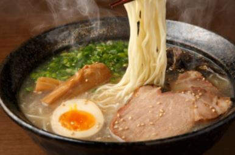
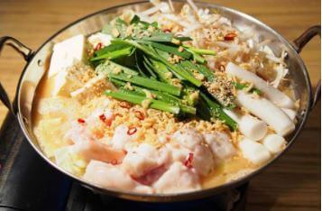
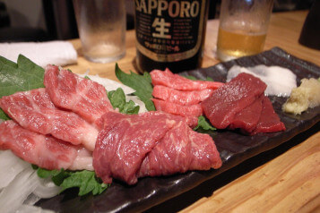

Welcome to Kyushu, Japan
Famous Kyushu cuisine: Hakata Ramen!!
Hakata ramen originates from Hakata district of Fukuoka city in Kyushu. It has a rich, milky, pork-bone tonkotsu broth and rather thin, non-curly and resilient noodles. Often, distinctive toppings such as crushed garlic, beni shōga (pickled ginger), sesame seeds, and spicy pickled mustard greens (karashi takana) are left on tables for customers to serve themselves. Ramen stalls in Hakata and Tenjin are well known within Japan. Recent trends have made Hakata ramen one of the most popular types in Japan, and several chain restaurants specializing in Hakata ramen can be found all over the country.
Another famous Kyushu cuisine: Motsunabe
Motsunabe is a type of nabemono in Japanese cuisine, which is made from beef or pork tripe or other offal. It is a popular stew made with guts portions of various types of meat, prepared in a conventional kitchen cooking pot or a special Japanese nabe pot (nabe). When it is cooked, it is filled with soup, prepared beef or pork offal and boiled for a while; cabbage and garlic chives are added. The base soup is usually soy sauce with garlic and chili pepper, or miso. Champon noodles are often put into the pot and boiled to complete the dish. The offal used in motsunabe is mostly beef intestines, but various kinds of offal can be used.
Kumamoto special: Horse meat
The Kumamoto Prefecture in western Kyushu is famous for the most unlikely of things: its horse meat, which is also known as Basashi. Japanese basashi is an unusual dish which incorporates thin slices of raw horse meat. It belongs to the popular and broad group of sashimi dishes and is considered to be a unique Japanese delicacy. Horse meat is usually leaner than other, more traditional types, it has a slightly sweet flavor, and depending on the maturity, its color can range from pink to dark red.
Fukuoka adventure: Yatai
A yatai (屋台) is a small, mobile food stall in Japan typically selling ramen or other food. The name literally means "shop stand".The stall is set up in the early evening on pedestrian walkways and removed late at night or in the early morning hours. They are prevalent in Fukuoka City. The best place to find them is on the southern end of Nakasu Island. Located in the middle of the city, Nakasu Island has a long row of around 20 yatai that are attractively situated along the water.